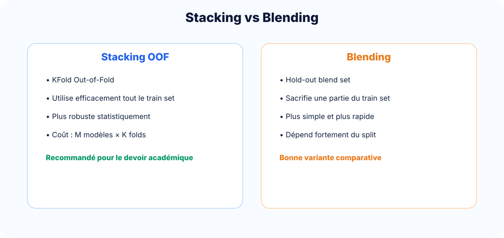

Advanced Machine Learning
Blending et comparaison détaillée
Différencier clairement le stacking OOF et le blending hold-out : principe, mathématique, stabilité, coût et usage académique.
1. Définition du blending
Le blending est une variante du stacking : au lieu d’utiliser K folds OOF, on réserve un sous-ensemble du train set appelé blend set. Les base learners sont entraînés sur D_base, puis ils prédisent D_blend. Le meta-learner apprend sur ces prédictions.

2. Comparaison approfondie
| Critère | Stacking OOF | Blending |
|---|---|---|
| Construction de Z | Validation croisée Out-of-Fold | Hold-out blend set |
| Utilisation du train set | Très efficace : tout le train contribue aux méta-features | Moins efficace : une partie est réservée au blend set |
| Risque de fuite | Faible si OOF correct | Faible si split propre |
| Stabilité | Généralement meilleure | Plus dépendante du split hold-out |
| Coût | Élevé : M × K entraînements | Plus faible |
| Simplicité | Moyenne | Élevée |
| Usage recommandé | Rapport académique rigoureux | Prototype rapide, baseline comparative |
Conclusion : pour un devoir de Master strict, le stacking OOF est la méthode principale à défendre. Le blending est une variante importante à comparer, mais plus fragile statistiquement.
3. Mathématique du blending
Découpage
D_train = D_base ∪ D_blend
Méta-features de blending
Z_blend = [h_1(D_blend), h_2(D_blend), ..., h_M(D_blend)]
Meta-learner
ŷ = g(Z_blend)
4. Quand utiliser quoi ?
Choisir Stacking
Dataset petit ou moyen, rapport académique, besoin de robustesse, validation expérimentale stricte.
Choisir Blending
Prototype rapide, compétition, dataset très grand, coût OOF trop élevé.